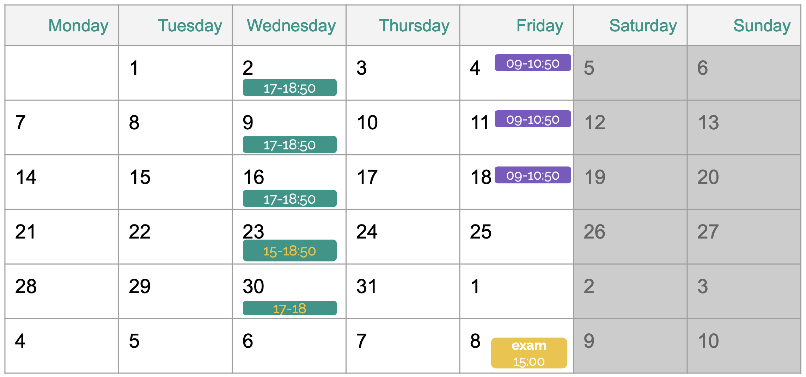

Syllabus
Schedule
Classes will take place at Seminario 3 (CIMCYC) on Wednesday from 17:00 to 18:50 and Fridays from 09:00 to 10:50.

Required Software
Check PRADO for instructions on how to install E-Prime.
OpenSesame (download latest version from here).
It should run in any more or less recent computer. If you have any issue installing it, please let me know as soon as possible!
Resources and recommended readings
Note: these are just extra readings in case you want to learn more. They are encouraged but not required to follow or pass the course.
- Barbosa, J., Stein, H., Zorowitz, S., Niv, Y., Summerfield, C., Soto-Faraco, S., & Hyafil, A. (2023). A practical guide for studying human behavior in the lab. Behavior Research Methods, 55(1), 58-76.
- Frank, M. C., Braginsky, M., Cachia, J., Coles, N.A., Hardwicke, T.E., Hawkins, R.E., Mathur, M.B., and Williams, R. 2024. Experimentology: An Open Science Approach to Experimental Psychology Methods. MIT Press. https://doi.org/10.7551/mitpress/14810.001.0001.
- Mathôt, S., Schreij, D., & Theeuwes, J. (2012). OpenSesame: An open-source, graphical experiment builder for the social sciences. Behavior Research Methods, 44, 314-324.
- Myers, J. L., Well, A. D., & Lorch Jr, R. F. (2013). Research design and statistical analysis. Routledge.
Assessment
This course is divided in two parts:
Programming of experiments (50% of the final grade)
Statistical analyses (50% of the final grade)
A minimum of 25% in each phase is required to pass the course.
In my part of the course (Part 1), your final grade will depend on:
| Activity | Contribution to final grade |
|---|---|
| Participation and in-class assignments | 30% |
| Individual programming assignments | 30% |
| Final project | 40% |
Course Policies
Attendance and Participation
Attendance is strongly encouraged for this course due to its eminently practical nature. Please note:
- Many in-class activities and hands-on exercises might not be easily replicated outside of class.
- Regular attendance will significantly enhance your learning experience and ability to complete assignments successfully.
- If you must miss a class, it is your responsibility to catch up on missed material and assignments.
- Consistent participation in class discussions and activities will positively impact your learning and final grade.
Late Work and Extensions
- Assignments are due on the dates specified in the course schedule.
- Late submissions will incur a 20% penalty
- If you anticipate difficulty meeting a deadline, please contact me as soon as possible to discuss potential extensions.
- Extensions may be granted for documented emergencies or extenuating circumstances at the instructor’s discretion.
Academic Integrity
- All work submitted must be your own.
- When using external sources (including generative AI tools), proper citation is required.
- Collaboration on assignments is encouraged, but each student must submit their own original work.
Communication
- Email (
cgonzalez at ugr dot es) is the primary mode of communication outside of class. - You can also use PRADO if you prefer.
Office Hours
Mondays from 8:30 to 11, but feel free to send me an email anytime or just ask me after class.